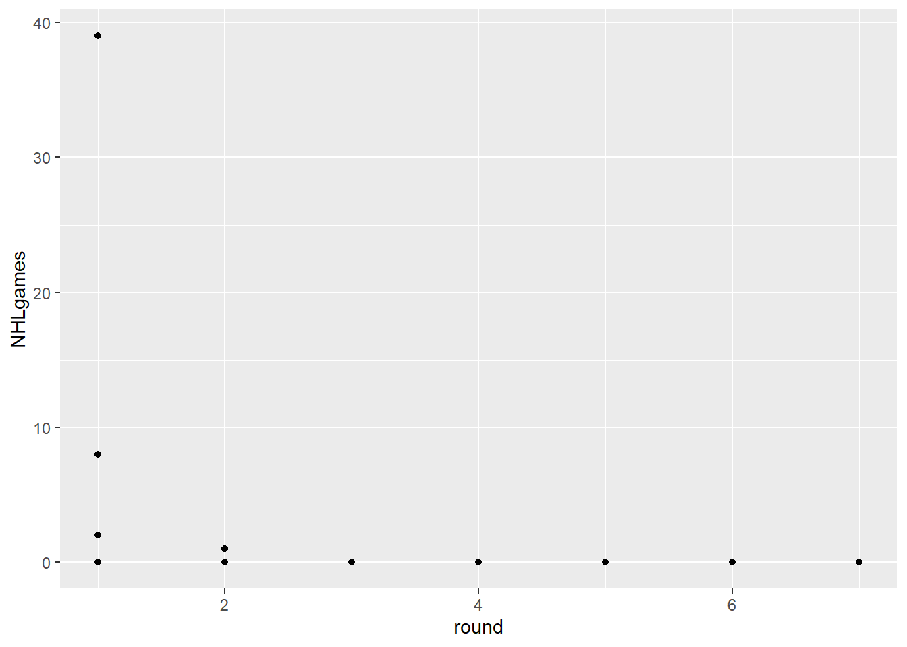
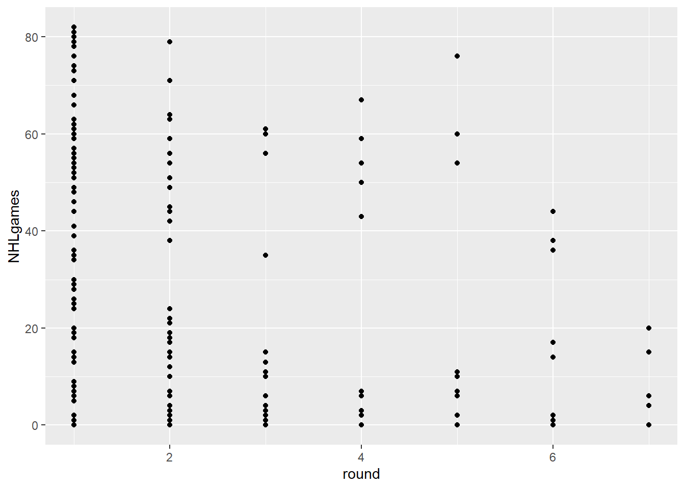
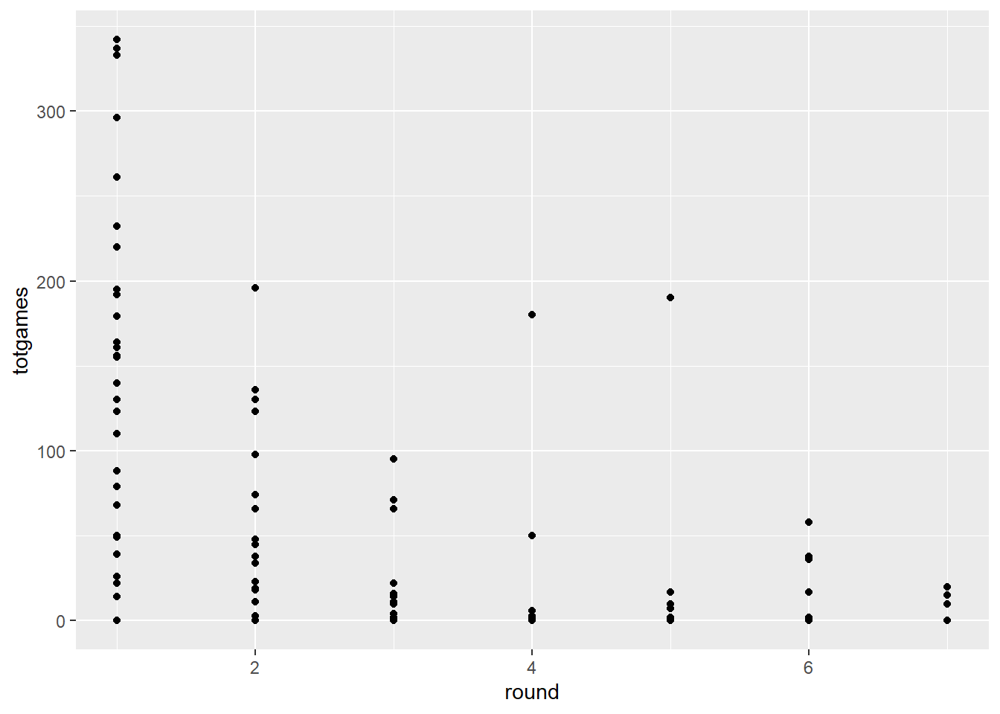
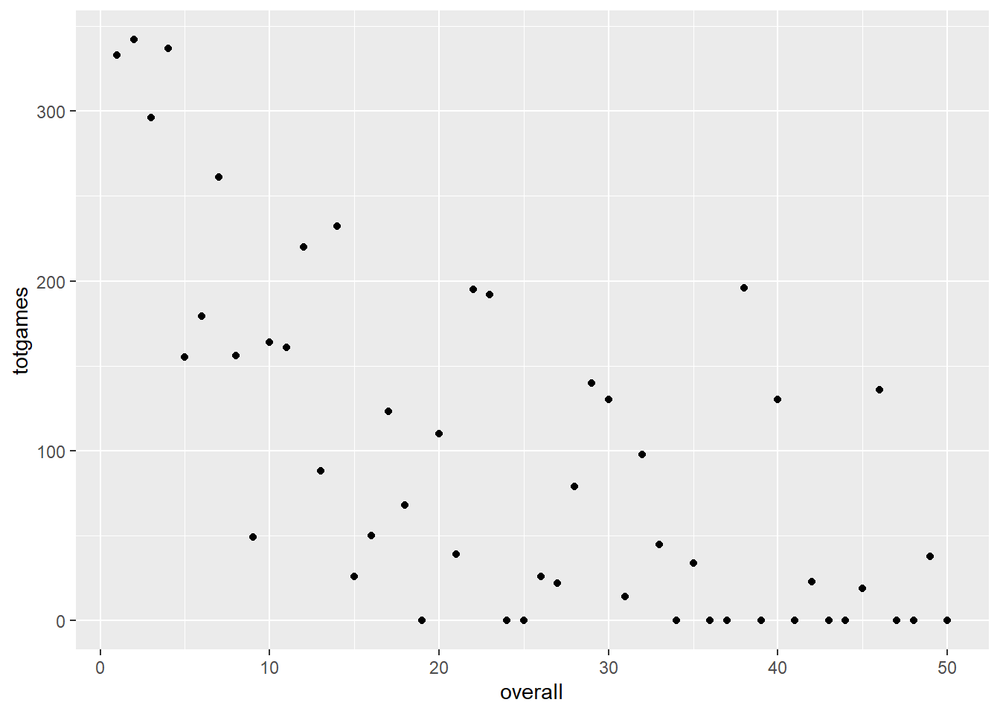
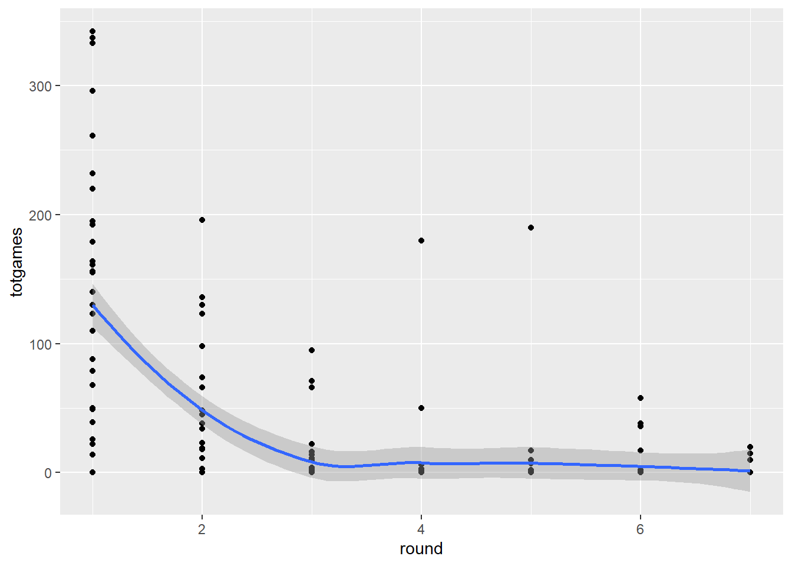
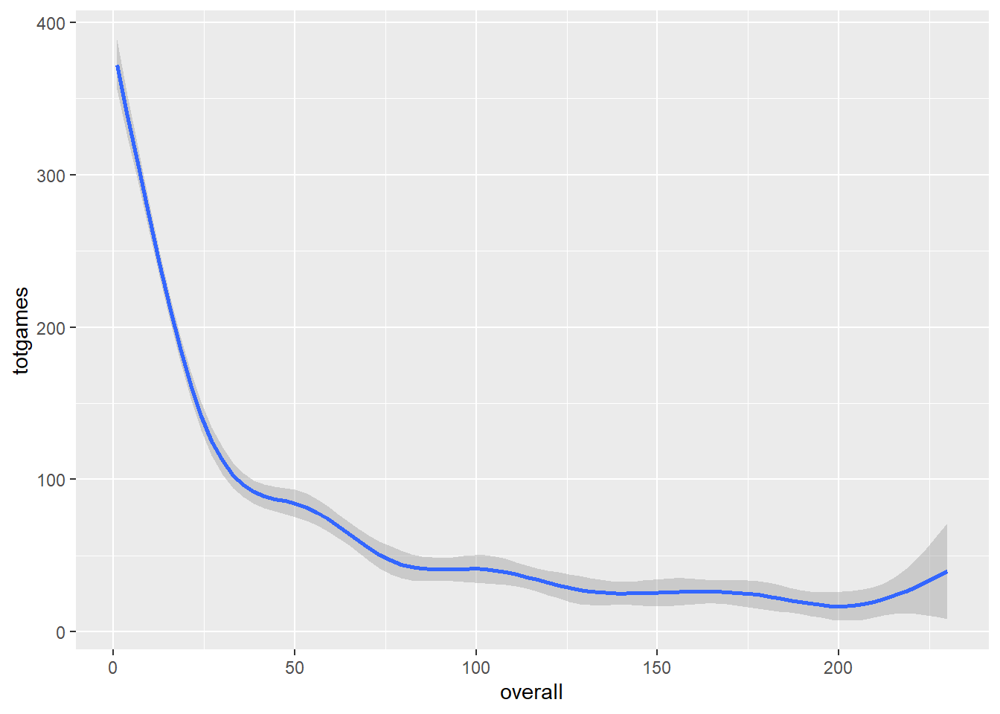
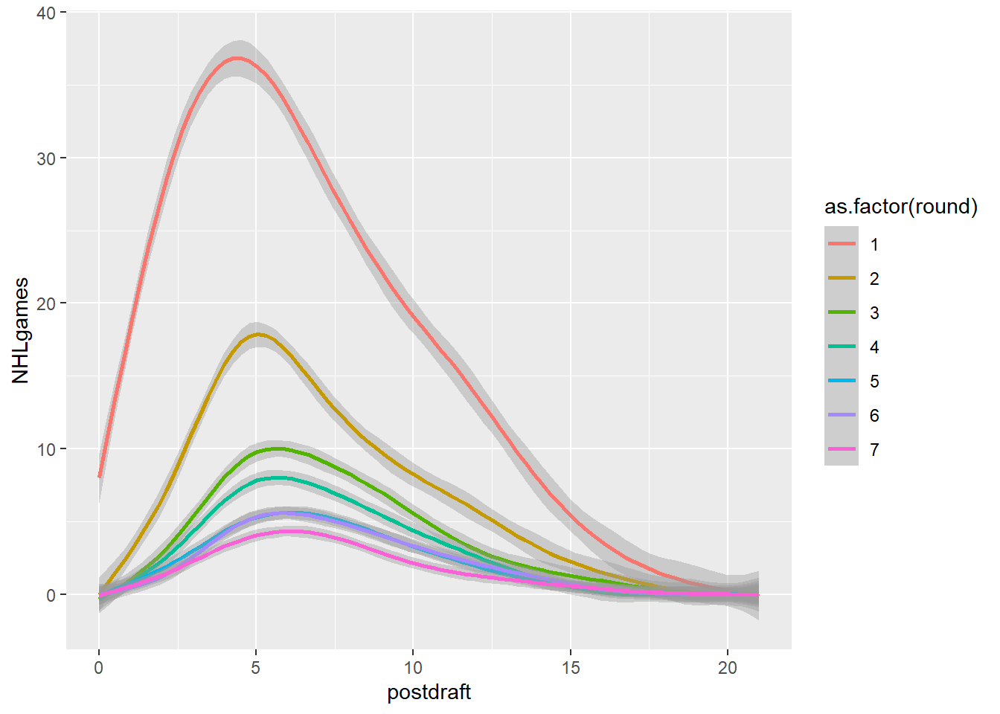
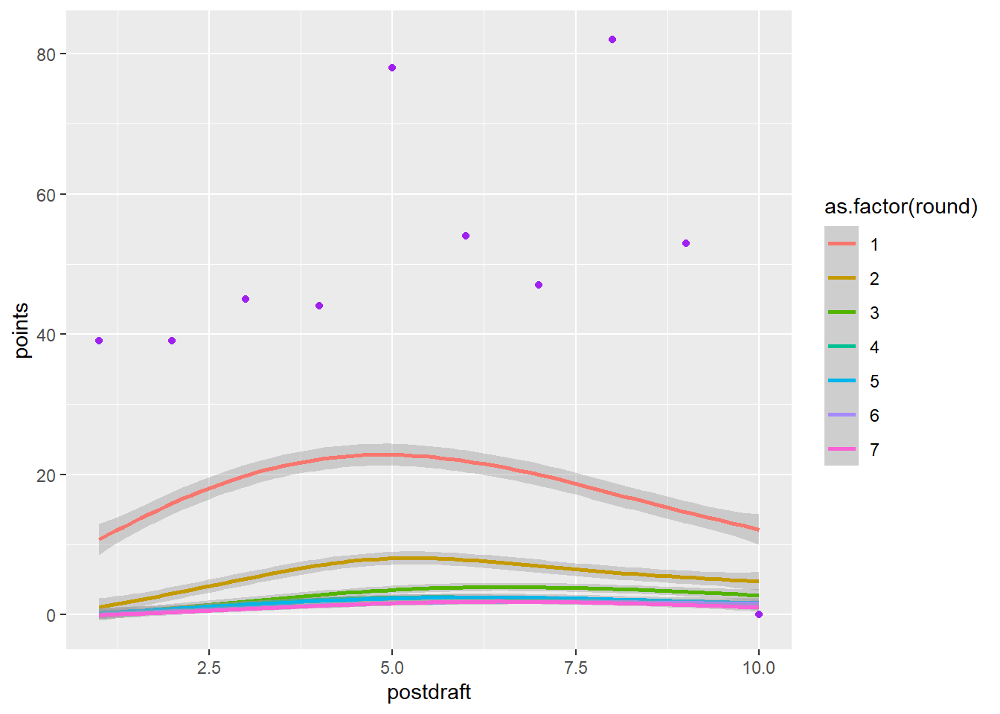

Code
knitr::opts_chunk$set(echo=FALSE, warning=FALSE, error=FALSE, message=FALSE)knitr::opts_chunk$set(echo=FALSE, warning=FALSE, error=FALSE, message=FALSE)In this assignment, we are going to practice creating visualizations for tabular data where everyone will engage in the same logic process and have the same design objectives in mind.
The scenario below will allow you to complete the assignment. It deals with data that are of the appropriate complexity and extent (number of observations and variables) to challenge you.
Hockey and drafting. Was the trade worth it? Did Vancouver or Calgary “win” the trade (outlined in Assignment 5)?
Can we make some visualizations that help us answer this question?
If you are solely interested in my Conclusive Figure and conclusion drawn from it, see Figure @ref(Conclusive_Figure) for details.
(I left fluff from the original assignment because it was helpful for me to work through.)
| Attribute | Type | Description |
|---|---|---|
| draftyear | Ordinal | Calendar year in which the player was drafted into the NHL. |
| name | Item | Full name of the player. |
| round | Ordinal | Round in which the player was drafted (1 to 7). |
| overall | Ordinal | Overall draft position of the player (1 to 224) |
| pickinRound | Ordinal | Position in which the player was drafted in their round (1 to 32). |
| height | Quantitative | Player height in inches. |
| weight | Quantitative | Player weight in pounds. |
| position | Categorical | Player position (Forward, Defense, Goaltender) |
| playerId | Item | Unique ID (key) assigned to each player. |
| postdraft | Ordinal | Number of seasons since being drafted (0 to 20). |
| NHLgames | Quantitative | Number of games played in the NHL in that particular season (regular season is 82 games, playoffs are up to 28 more). |
As Barrie states, we have a data frame with all the drafted players from 2000-2018, their position, their draft year and position, and then rows for each season since being drafted (postdraft). The key variable here is NHLgames, which tells us how many games they played in the NHL each season since being drafted. Whether drafted players even make the NHL, and how many games they play, might be a good proxy to understand the value of a draft pick we just traded away.
Just like many pro sports, it is pretty rare for a player to play in the NHL right after being drafted. Players get drafted when they are 18 years old, and they usually play in the juniors, minor leagues, or the NCAA to further develop.
Let’s use a scatterplot to visualize this phenomenon with the most recent draft classes.

Figure 1. Scatterplot depicting number of NHL games played after being drafted from various rounds during the year of 2022.
MARKS = Points
CHANNELS = Position
KEY-VALUE PAIRS = Only values of round pick number and games played in the NHL.
Ok so this scatterplot shows that 1st round picks play the most NHL games, at least those drafted in June 2022. As round picks increase, those players often play less NHL games.
There are few things wrong with this visualization, however:
Hmm… jitter?

I added an additional channel/key of jitter reflecting picks in round and color showing the spectrum of picks in round… Not sure how helpful this is, but I tried!
(I added these above)
Hmm… I am not sure. Use/add in additional/other variables, perhaps?
The data from the most recent drafts aren’t really helpful for our question. Let’s go back in time and use a draft year that has had some time to develop and reach their potential. How about 2018?

Hmmm… in addition to the problem of overplotting, we’ve got an additional issue here. We actually have two keys and one attribute. The attribute is NHLgames, and the keys are round and postdraft, but we are only using round.
… explicitly, right? Of note, we filtered by only using the draft year of 2018 and included NHL games played up to 6 years from that draft (so 2024 if I did my math right). This makes sense- we are in the year 2024!
As I just touched on above, postdraft indicates the number of seasons after being drafted. We have several choices here. We can make a visualization that uses both keys, or we can somehow summarize the data for one of the keys.
Alrighty, sounds good to me.
For example, let’s say we just wanted to know the TOTAL number of NHL games played since being drafted. We will make it a new variable!

Look closely at the two graphs above. How are they different?
Hmm… it looks like this graph has accounted for/ordered other attributes. I am not sure exactly how though. I just notice in the code that we have grouped by playerId, round, overall, position, and name… Perhaps this is what makes the second graph seem a bit more ordered?
Further, we also came up with “totgames” as a sum of “NHLgames”. So if I am following, totgames = sum of NHL games played as ordered by those previous variables (playerId, round, overall, position, name)?
We need to think about how Barrie has been manipulating the data…
He says: I’m using the Tidyverse to do these manipulations. I set up the original data frame to conform to the tidy data principles (every column is a variable, every row is an observation), which is pretty much the base form of how we’ve discussed Tabular Data in class.
I’ve snuck in some functions that have allowed me to FILTER, GROUP, and SUMMARIZE the data, often creating new dataframes as I do so. Hey, look! A handy cheatsheet for data transformation using the tidyverse!
These functions come from the dplyr package that gets installed as part of the tidyverse. The basic categories of actions are:
All of these work with group_by() so you can perform whichever operation on the groups that might be present in your data set.
Ok great… I am starting to get the lingo. Earlier we did group_by() and summarise().
Let’s get back to improving our understanding of the relative value of NHL draft picks. The figure above considers a single draft class (2018), and shows the total number of NHL games all the players have accumulated, separating each draft round on an ordinal x axis.
Got it!
Fine, I guess, but we still have to deal with overplotting, and think about whether a scatterplot really helps us accomplish our task.
This approach might yield a better match with the scatterplot idiom. What if we ignore draft round, and use the player’s overall draft position instead? It also might help us focus on our motivating question! What is the potential value of pick 31, and how does Elias Lindholm compare to that value?
Yes! We want to apply these manipulations to get a better feel for this 31st pick. And looking at this as a function of NHL games played.

I took the liberty of zooming in the x axis to 0-50. After all, Elias was a 31st round pick! This allows us to see how many games other typical 31-ish picks play (at least from the 2018 draft year).
We seem to be running into an issue in terms of overplotting. Scatterplots are great, but they work best for two quantitative attributes, and we have a situation with one or two keys and one quantitative attribute. The thing is, scatterplots can be very useful when part of our workflow involves modeling the data in some way. We’ll cover this kind of thing in future assignments, but just a bit of foreshadowing here:

Adding the smoothed line doesn’t eliminate the overplotting problem, but it does indicate that it exists. We’ll cover other potential solutions (such as box plots and violin plots) to this issue later in the course, when we get to the notions of faceting and data reduction.
Why not include all the data? A scatter plot with that many players (4775) isn’t going to be great. But we could plot some sort of polynomial model to get a sense of the relationship between draft position and NHL games. We’ll filter to the first 8 years of their career.
Sounds good to me!

Or we could visualize the average number of games played as a function of time since being drafted.

I personally really like this figure. And in class we manipulated it to better answer the question of if the trade was a good trade.
I am going to try to recreate a version of sorts of this figure above for my CONCLUSIVE FIGURE. In doing so, I will try to get back to the point of this assignment in the first place.
I want to compare Elias himself (who’s draft data from 2013 is in the dataset) to other good players (measured by their round picked, but position specific). On the y axis, I don’t want to just look at games played, but the performance within those games. The variable “points” will be used to do this as it summarizes goals and assists- valuable player performance stats indeed, at least I would guess so for a forward!
(As Barrie’s original hint eluded to, I am going to use the NHLdraftstats.csvdata to gather these performance measures.)
[1] "C:/Users/heidi/OneDrive - University of Idaho/UI Spring 2024/BCB 520 Data Vis/BCB520Portfolio/posts/Assignment 5 NHL Draft Analysis"| …1 | draftyear | name | round | overall | pickinRound | height | weight | position | playerId | postdraft | NHLgames | goals | assists | points |
|---|---|---|---|---|---|---|---|---|---|---|---|---|---|---|
| 54811 | 2013 | Elias Lindholm | 1 | 5 | 5 | 72 | 192 | Forward | 8477496 | 10 | 0 | 0 | 0 | 0 |
| 54812 | 2013 | Elias Lindholm | 1 | 5 | 5 | 72 | 192 | Forward | 8477496 | 11 | 0 | 0 | 0 | 0 |
| 54813 | 2013 | Elias Lindholm | 1 | 5 | 5 | 72 | 192 | Forward | 8477496 | 12 | 0 | 0 | 0 | 0 |
| 54814 | 2013 | Elias Lindholm | 1 | 5 | 5 | 72 | 192 | Forward | 8477496 | 13 | 0 | 0 | 0 | 0 |
| 54815 | 2013 | Elias Lindholm | 1 | 5 | 5 | 72 | 192 | Forward | 8477496 | 2 | 82 | 11 | 28 | 39 |
| 54816 | 2013 | Elias Lindholm | 1 | 5 | 5 | 72 | 192 | Forward | 8477496 | 3 | 72 | 11 | 34 | 45 |
| 54817 | 2013 | Elias Lindholm | 1 | 5 | 5 | 72 | 192 | Forward | 8477496 | 5 | 81 | 27 | 51 | 78 |
| 54818 | 2013 | Elias Lindholm | 1 | 5 | 5 | 72 | 192 | Forward | 8477496 | 6 | 70 | 29 | 25 | 54 |
| 54819 | 2013 | Elias Lindholm | 1 | 5 | 5 | 72 | 192 | Forward | 8477496 | 7 | 56 | 19 | 28 | 47 |
| 54820 | 2013 | Elias Lindholm | 1 | 5 | 5 | 72 | 192 | Forward | 8477496 | 8 | 82 | 42 | 40 | 82 |
| 54821 | 2013 | Elias Lindholm | 1 | 5 | 5 | 72 | 192 | Forward | 8477496 | 9 | 64 | 18 | 35 | 53 |
| 54822 | 2013 | Elias Lindholm | 1 | 5 | 5 | 72 | 192 | Forward | 8477496 | 1 | 81 | 17 | 22 | 39 |
| 54823 | 2013 | Elias Lindholm | 1 | 5 | 5 | 72 | 192 | Forward | 8477496 | 4 | 81 | 16 | 28 | 44 |
| 54824 | 2013 | Elias Lindholm | 1 | 5 | 5 | 72 | 192 | Forward | 8477496 | 14 | 0 | 0 | 0 | 0 |
| 54825 | 2013 | Elias Lindholm | 1 | 5 | 5 | 72 | 192 | Forward | 8477496 | 0 | 58 | 9 | 12 | 21 |
| 54826 | 2013 | Elias Lindholm | 1 | 5 | 5 | 72 | 192 | Forward | 8477496 | 15 | 0 | 0 | 0 | 0 |
| 54827 | 2013 | Elias Lindholm | 1 | 5 | 5 | 72 | 192 | Forward | 8477496 | 16 | 0 | 0 | 0 | 0 |
| 54828 | 2013 | Elias Lindholm | 1 | 5 | 5 | 72 | 192 | Forward | 8477496 | 17 | 0 | 0 | 0 | 0 |
| 54829 | 2013 | Elias Lindholm | 1 | 5 | 5 | 72 | 192 | Forward | 8477496 | 18 | 0 | 0 | 0 | 0 |
| 54830 | 2013 | Elias Lindholm | 1 | 5 | 5 | 72 | 192 | Forward | 8477496 | 19 | 0 | 0 | 0 | 0 |
| 54831 | 2013 | Elias Lindholm | 1 | 5 | 5 | 72 | 192 | Forward | 8477496 | 20 | 0 | 0 | 0 | 0 |
Now I want to look at a graph that looks at points scored over the seasons following being drafted. I like that the lines then represent various rounds from which the players were drafted.

I then filtered this so that it only includes comparable players to Elias- those who are forwards and weigh between 175-220 lbs.

I then added Elias’ data on top of that to see how he compares. Especially since we traded him for a future 1st round pick, this visualization helps us see how Elias and the possible/future/typical 1st round guy compare. I also changed the x axis to only include the first 10 years postdraft, especially since Elias was drafted in 2013, 10 years puts us to the current year.

Conclusive Figure shows average points (summarized from goals and assists) scored by players drafted from previous draft seasons who are forwards and weigh between 175-220 pounds. Colored lines indicate the average stats of those drafted from different rounds. Purple scatter points are reflective of Elias Lindholm’s performance every season since being drafted in 2013 as a 31st round draft pick.
As the figure above goes to show, Elias is a standout- even compared to average 1st round picks who were also forwards around his weight.
All in all, I say the Canucks made a great decision given their success this seasson. As for Calgary, I think they let go of a well-performing player, but who is to say the up and coming 1st draft pick they get in the future may not also be a stand out? To be determined…